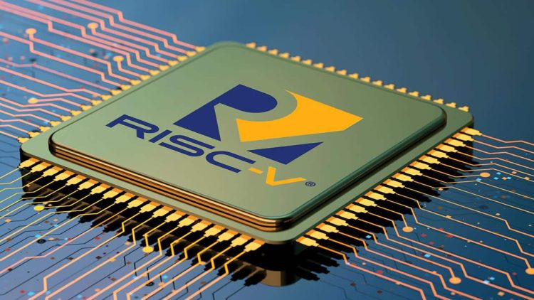
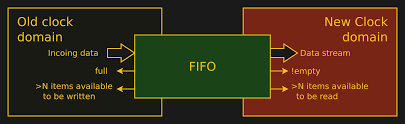
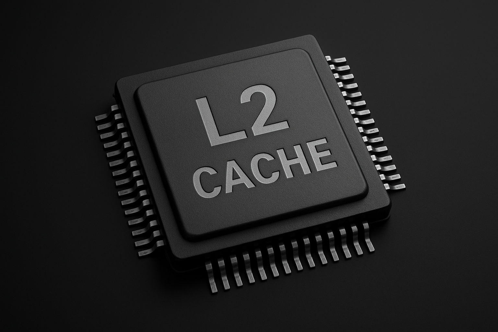

About Me
I completed my undergraduate degree in Electronics and Communication Engineering with early exposure to digital electronics and processor fundamentals, which sparked my interest in hardware architecture and verification. During my industry experience as a Software Engineering Intern, I worked extensively on building scalable React applications, automating CI/CD pipelines, and creating reusable components —an environment that strengthened my engineering discipline and problem-solving approach. However, the more I worked across software systems, the more I realized my passion lay in understanding hardware behavior and architecture at a deeper level. This transition motivated me to complete my master’s degree in Electrical and Computer Engineering at Portland State University, where I now focus on ASIC design, SystemVerilog-based verification, processor architecture, and advanced validation techniques. Through projects involving FPU verification, RISC-V simulation, cache controller design, and hardware assertions, I’ve built a strong foundation that merges my software versatility with a dedicated direction toward hardware engineering.
My ResumeMy Work
CNN based Hand written Digit Recognizer
Designed and deployed hardware accelerated CNN inference on FPGA
- AXI Matrix Multiplication IP [Verilog based]
- CNN inference [Embedded C based]
- User interface [React Js]
- CNN Training [C based]

RISC-V Simulator
Implemented 5-stage pipelined RISC-V 32IM ISA functionality in single cycle model.
- C Based
- Arguments for PC and Stack Pointer
- 64KB Memory Constraints
- Robust verfication using Memory Images

Arithmetic FPU Unit
Designed and verfication of IEEE 754-compliant Single Precision Arithmetic Floating Point Unit(System Verilog)
- UVM based verification
- 95% functional and 80% code coverage
- 300+ stimulus to cover all cases
- Covered corner cases like Infinity, NaN, Subnormals

Asynchronous FIFO with CDC
Assertion based verification of Asynchronous FIFO with CDC using Synopsis VC Formal
- System Verilog Assertions
- 100% functional cover properties
- Robust assumes for constraints
- Verified Metastability, Data integrity, Timing

Cache Controller
Designed and verified Last Level Cache Controller(System Verilog).
- Dynamic Simulation
- 16-way associativity and 64-byte lines
- Write back and write-allocate policies
- P-LRU replacement policy and MESI protocol for coherence
- comprehensive testcase verification with performance metrics of 99.6%
